| 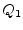 | 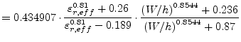 | (11.186) |
| 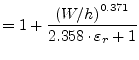 | (11.187) | |
| 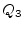 | 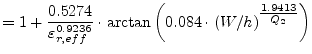 | (11.188) |
| 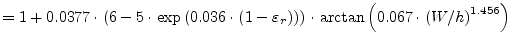 | (11.189) | |
| 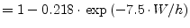 | (11.190) |
A microstrip open end can be modeled by a longer effective microstrip line length 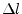 as described by M. Kirschning, R.H. Jansen and N.H.L. Koster [35].
| 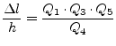 | (11.185) |
with
| 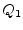 | 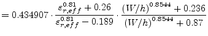 | (11.186) |
| 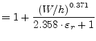 | (11.187) | |
| 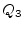 | 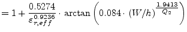 | (11.188) |
| 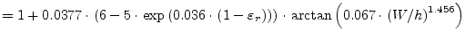 | (11.189) | |
| 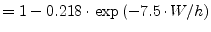 | (11.190) |
The numerical error is less than 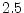% for
 and
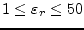.
and
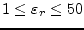.
Another microstrip open end model was published by E. Hammerstad [36]:
 |
(11.191) |
Here the numerical error is less than 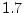% for 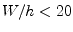.
In order to simplify calculations, the equivalent additional line length can be transformed into an equivalent open end capacitance 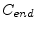:
With  being the capacitance per length and
being the capacitance per length and  = 299 792 458 m/s
being the vacuum light velocity.
= 299 792 458 m/s
being the vacuum light velocity.